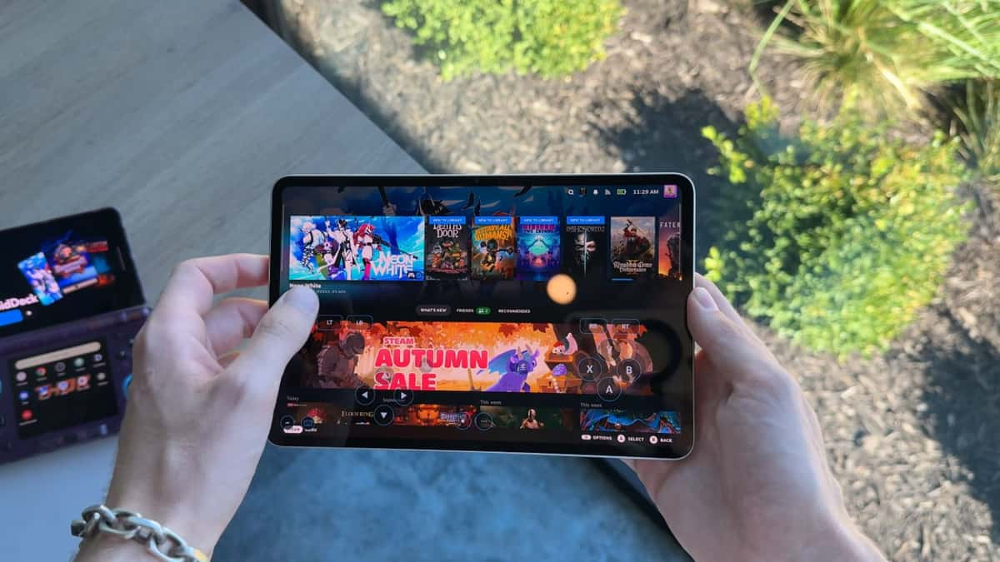

DroidDeck
Turns an Android phone or handheld into a Steam Deck - play your PC games on the go.
An open-source compatibility layer that lets Android devices run Steam games through ARM64 Proton - no streaming, the games run locally on the phone.

How does it work?
You want to play your Steam library on the go, but a Steam Deck costs $400+ and phone game streaming needs fast Wi-Fi.
You install DroidDeck on an Android phone or handheld with a recent Qualcomm chip.
Your Steam account and the games you want to play.
It runs Valve's own ARM64 Steam client and translates PC game code to ARM instructions in real time.
- Installs a compatibility layer (ARM64 Proton, Valve's translation tool) that converts x86 game code to ARM instructions your phone can run.
- Presents your Steam library in a Steam Deck-style interface with virtual controls, a performance overlay, and frame generation.
- Runs each game locally on your phone's GPU - no streaming, no PC, no internet needed during play.
Your Steam games running on your Android device, with controller support and performance tuning.
- Playable Steam gamesOne user reported MXGP 2021 at 60 FPS (Medium) on an AYN Odin 3 - results vary by game and device.
- Steam Deck-style controlsVirtual ABXY buttons, gyro, trackpads, and a Quick Access button - your phone acts as a Steam Deck controller.
- A performance overlayGPU load, CPU load, temperatures, VRAM, battery life and frame-time data, like Steam Deck's built-in overlay.
What changes for me?
Without it
- Playing Steam games on the go means buying a $400+ Steam Deck
- Phone game streaming needs strong Wi-Fi and adds input lag
- Mobile ports of PC games are often stripped-down versions
With it
- Your Android phone runs Steam games locally - no streaming, no extra hardware
- Games use your phone's GPU directly, so they work offline
- An open-source project you can inspect - no hidden services or accounts beyond Steam
How hard is it to try?
Effort
- Check your device: you need Android 9 or later with a Qualcomm Adreno 650 or newer GPU (most flagship phones from 2021 onward, or handhelds like the AYN Odin 3 or Retroid Pocket 5). About 4 GB of free space for the runtime.
- Download DroidDeck v0.6.0 - install the APK (allow installs from unknown sources if prompted).
- Launch DroidDeck, sign into Steam, and pick a lighter game first (2D or older 3D titles work best). The app will download the runtime on first launch.
What it takes on your computer
- Space on disk
- About 3 GB for the runtime, plus 1.1 GB for optional desktop components. Games need their full install size on top (typically 5 to 50 GB per game).
- Memory while it runs
- no data found
- Runs on
- Android 9 or later with a Qualcomm Adreno 650 or newer GPU. v0.6.0 also supports Meta Quest 2/3/3S (VR headsets) and several XR glasses (VITURE Pro, RayNeo, Rokid). Mali, Xclipse, PowerVR, and Adreno 710 GPUs are not supported.
Paste this into Claude Code. It runs your safety scan first, then a 10-minute test.
/skillspector https://github.com/Droid-Deck/DroidDeck (DroidDeck is an Android app - download the APK from the GitHub releases page and install it on a Qualcomm Snapdragon device.)
Should I?
Great if you...
- Gamers who want their Steam library on an Android phone without streaming
- Owners of Android gaming handhelds looking for a Steam Deck alternative
- Tinkerers who enjoy testing game compatibility on new hardware
Skip it if...
- Your phone has a non-Qualcomm GPU (Mali, PowerVR) - not supported yet
- You want a plug-and-play experience - this is early software and many games need tweaking
- You're happy with cloud gaming (GeForce Now, Xbox Cloud) and have good Wi-Fi
Instead, you could look at
- Steam LinkValve's official app for streaming PC games to your phone - needs Wi-Fi but works with any phone
- WinlatorRuns Windows apps and some games on Android through Wine - broader compatibility but not Steam-integrated
Is it safe?
- Security advisories: 0GitHub's advisory list, checked Oct 23
- Searches for CVEs, vulnerabilities, malware and scams1 results read, including the national CVE database: nothing found
- Are the stars earned?13.1K stars, 58 contributors, 1.3K commits. findarepo: looks organic
Watch out for
- Beware fake download sites. The project warns about impersonation sites using its name and logo. Download only from the official GitHub releases page.
- 29 days old, beta software. Game compatibility is limited and performance varies by device. Notebookcheck characterizes it as beta with limited hardware validation.
- GPU requirements are strict. Qualcomm Adreno 650 or newer only. Mali, PowerVR, Xclipse, and Adreno 710 GPUs are not supported - that rules out most Samsung Exynos and Google Tensor phones.
- One Reddit user bricked their controller mapping after updating to v0.3.0 (fixed by switching to X360 mode). Expect rough edges between updates.
Who's using it, and for what?
DroidDeck is 29 days old. Press coverage shows gameplay on handhelds, but detailed benchmarks are from individual uncontrolled tests - not formal reviews.
We couldn't find anyone describing real use of it yet. That's normal for a brand-new repo, and it's worth knowing.
Who's talking about it
- NotebookcheckDroidDeck 0.3.0 brings Steam Deck-style controls and frame generation to Android
- DexertoFree app lets Android phones play Steam games without a PC
- Pocket TacticsThis new Android app makes your gaming handheld feel more like a Steam Deck
- Android AuthorityDroidDeck: SteamOS-style app for Android
- TrendshiftDroidDeck trending monthly
- findarepoStar growth looks organic (100/100)
Sources
- DroidDeck GitHub, Oct 23
- DroidDeck v0.6.0 release notes, Oct 22
- Notebookcheck coverage (Louise Burke), Oct 3
- Dexerto coverage, Oct 23
- Pocket Tactics coverage (Connor Christie), Oct 6
- Android Authority coverage, Oct 23
- findarepo listing, Oct 23
- Trendshift listing, Oct 23